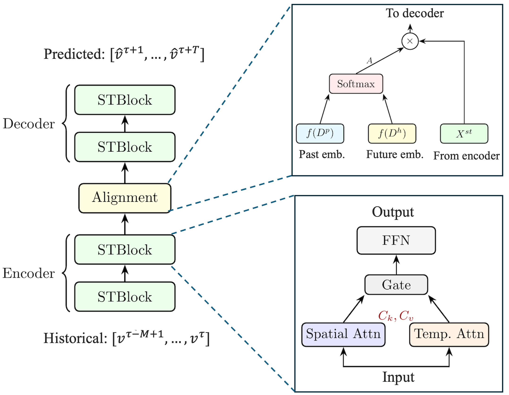

CVF 页面核验其为 ICCV 2025。论文围绕 event camera data pretraining 设计 adaptive prompt fusion，把外部视觉知识和事件表征学习结合。
阅读时需要把方法设计与主要结果一起看：会议页和代码仓库均给出正式论文与实现；具体任务指标需阅读 PDF 进一步核验。
Figure 2: Overview of our extension of GSWF to the historical dimension through (a) data structure, (b) modeling strategy, (c) forecasting framework designed for the proposed Triax...
如何保留注意力对动态依赖的灵活建模，同时把节点交互成本线性化？
对当前主题的关键意义在于：最小实验是把诊断通道或空间探针视为图节点，比较 full cross-attention、Performer/Linformer、EMAGN 聚类注意力在显存、延迟和异常前兆召回上的差异。
方法与关键创新

Figure 2: The architecture of the proposed EMAGN. Left: overall encoder-decoder architecture with stacked STBlocks and an alignment module. Top right: the alignment module computes...
Figure 14 : Comparison between diagnostic performance and metric-based rankings across the STFT configuration search space ℋ \mathcal{H} of the PU dataset. The blue solid line repr...
Figure 2: Overview of our extension of GSWF to the historical dimension through (a) data structure, (b) modeling strategy, (c) forecasting framework designed for the proposed Triax...
Figure 2: The architecture of the proposed EMAGN. Left: overall encoder-decoder architecture with stacked STBlocks and an alignment module. Top right: the alignment module computes...
Figure 3: Overall architecture of the proposed RainDancer deraining framework. The network first extracts a spatio-temporal RGB feature with an Encoder block, and then performs thr...
Figure 1: Overall architecture of the proposed multimodal foundation model for low-altitude wireless tasks. The framework contains three stages: modality feature extraction, multim...
Figure 3: Overall architecture of the proposed RainDancer deraining framework. The network first extracts a spatio-temporal RGB feature with an Encoder block, and then performs thr...
TABLE I : Performance on LLaVA-v1.5. Values outside parentheses denote the original accuracy (%) on TextVQA, ScienceQA, and GQA, or the original total score on MME. Values in paren...
Figure 2 : Architecture overview. The M 4 {}^{\text{4}} World model adopts a shared DiT backbone with two cross-attention pathways to integrate control signals and cross-sensor con...
![Figure 14 : Comparison between diagnostic performance and metric-based rankings across the STFT configuration search space ℋ \mathcal{H} of the PU dataset. The blue solid line represents the H-score obtained from the diagnostic model, while the red line represents the corresponding separability metric value. The red, yellow, and green markers denote the top-1, top-5, and top-10 candidate STFT configurations selected by each metric, respectively. The results show that a small reduced candidate set ℋ R \mathcal{H}_{R} selected by the metric ranking can retain near-optimal STFT configurations while substantially reducing the number of network-training trials.](../assets/figures/6274a689f6dfe0f4.png)
![Figure 3: Overall architecture of the proposed RainDancer deraining framework. The network first extracts a spatio-temporal RGB feature with an Encoder block, and then performs three progressive stages. Each stage contains frame-domain decoupling, rain-oriented SNN event disentanglement (SNN-RoED), coupled representation modeling (CRM), event-guided rain fusion (EGRF), and rain-aware background fusion (RABF). The stage-wise rain features are collected by cross-stage aggregation, and the recovery module predicts the clean RGB background, clean event background, and RGB rain component.](../assets/figures/4d8d18900992d779.png)
![Figure 1 : FOLIO overview. A training-free focused semantic memory system for streaming video understanding. (1) Online segment-by-segment keyframe selection provides visual evidence for focus-guided memory writing. (2) A hybrid memory combines a short-term visual buffer with a long-term semantic memory linked to a visual-evidence cache. (3) At query time, FOLIO uses lightweight hybrid retrieval to link the query to relevant memory and evidence. (4) In multi-turn settings, previous-turn queries update the focus state for subsequent memory writes.](../assets/figures/337580d1b89de98e.png)